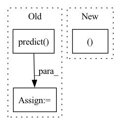

Pattern ID :17836
Before Change
model_score = None
// Remove rows from x, y and w, which contain Nan in any columns in y_test.
x_test, y_test, __ = drop_nan_by_y_index(x_test, y_test)
pred_test = model.predict( x_test)
model_pearsonr = pearsonr(np.ravel(pred_test), np.ravel(y_test.values))[0]
return pred_score, {"model_score": model_score, "model_pearsonr": model_pearsonr}
After Change
pred_score, y_test, __ = drop_nan_by_y_index(pred_score, y_test)
model_pearsonr = pearsonr(np.ravel(pred_score.values), np.ravel(y_test.values))[0]
return pred_score, {"model_pearsonr": model_pearsonr}, rid
def backtest_analysis(pred, rid):
backtest and analysisIn pattern: SUPERPATTERN
Frequency: 9
Non-data size: 3
Instances Fragment ID: 58563864
Project Name: microsoft/qlib
Commit Name: c22bd73f67ec445bc4f542ee9004667663c38f0e
Time: 2020-11-20
Author: dw1920@nyu.edu
File Name: tests/test_all_pipeline.py
M Class Name: AnonimousClass
N Class Name: AnonimousClass
M Method Name: train(0)
N Method Name: train(0)
M Parent Class:
N Parent Class:
M File Name: tests/test_all_pipeline.py
N File Name: tests/test_all_pipeline.py
M Start Line: 82
M End Line: 104
N Start Line: 111
N End Line: 130
Before Change
with torch.no_grad():
x_tensor = torch.from_numpy(image).to(DEVICE).unsqueeze(0)
print(x_tensor.shape)
pr_mask = seg_model.predict( x_tensor)
pr_mask = pr_mask.argmax(dim=1).squeeze().cpu().numpy().astype("uint8")
save_vis(
out_fp="./vis{}.png".format(str(i)),After Change
n = np.random.choice(len(dataset))
image, gt_mask = dataset[n]
image_vis = image.permute((1, 2, 0 )).cpu().numpy().astype("uint8")
gt_mask_vis = gt_mask.squeeze().cpu().numpy().astype("uint8")
if seg_model is not None: Fragment ID: 58563853
Project Name: ais-bonn/vp-suite
Commit Name: e8b74aea072bfc2c6f36278093202f5b017967f0
Time: 2021-07-15
Author: boltres@ais.uni-bonn.de
File Name: visualize.py
M Class Name: AnonimousClass
N Class Name: AnonimousClass
M Method Name: visualize(3)
N Method Name: visualize(2)
M Parent Class:
N Parent Class:
M File Name: visualize.py
N File Name: visualize.py
M Start Line: 16
M End Line: 25
N Start Line: 10
N End Line: 23
Before Change
"model_file": model_file
})
for X, y, split in zip(Xs, ys, splits):
y_pred = calibrator.predict( X)
metrics[-1]["accuracy_" + split] = (
accuracy_score(y, y_pred))
metrics[-1]["f1_" + split] = f1_score(y, y_pred)
After Change
Xs, y_trues, y_preds = (
(X_valid, X_test),
(y_valid, y_test),
(y_pred_valid, y_pred_test )
)
metrics.append({
"model_file": model_file Fragment ID: 58563852
Project Name: tsafavi/codex
Commit Name: cb963c8738f08ad97f74288ac4c819e6d951624a
Time: 2020-06-07
Author: tsafavi@umich.edu
File Name: scripts/tc.py
M Class Name: AnonimousClass
N Class Name: AnonimousClass
M Method Name: main(0)
N Method Name: main(0)
M Parent Class:
N Parent Class:
M File Name: scripts/tc.py
N File Name: scripts/tc.py
M Start Line: 169
M End Line: 191
N Start Line: 175
N End Line: 231
Before Change
hashtag_set = list(set(reduce(lambda x, y: x + y, hashtags)))
word_segmenter_output = self.word_segmenter.predict( hashtag_set, **segmenter_kwargs)
segmentations = word_segmenter_output.output
After Change
def segment(self, tweets: List[str], regex_flag: Any = 0, preprocessing_kwargs: dict = {}, segmenter_kwargs: dict = {} ):
hashtag_container, word_segmenter_output = self.build_hashtag_container(tweets, preprocessing_kwargs, segmenter_kwargs)
output = list(self.segmented_tweet_generator(tweets, *dataclasses.astuple(hashtag_container), flag=regex_flag))
return TweetSegmenterOutput(
Fragment ID: 58563849
Project Name: ruanchaves/hashformers
Commit Name: 45a0244f0004ef35ff19ba10ad322d58b621216e
Time: 2022-02-06
Author: ruanchaves93@gmail.com
File Name: src/hashformers/segmenter.py
M Class Name: TweetSegmenter
N Class Name: TweetSegmenter
M Method Name: segment(5)
N Method Name: segment(5)
M Parent Class: BaseSegmenter
N Parent Class: BaseSegmenter
M File Name: src/hashformers/segmenter.py
N File Name: src/hashformers/segmenter.py
M Start Line: 329
M End Line: 342
N Start Line: 346
N End Line: 349
Before Change
results = torch.cat(
[
x.logits
for x in self.trainer.predict(
model=self.model, dataloaders=loader, return_predictions=True
)
]
)
softmax = self.softmax(results)
// get confidence scores and label ints
confidence_and_labels_tensor = torch.max(softmax, dim=-1)
// section id correlates with index of batchencoding data
section_id = 0
for doc in docs:
for section in doc.sections:
for token_index, (offsets, word_id) in enumerate(
zip(
loader.dataset.encodings.encodings[section_id].offsets,
loader.dataset.encodings.encodings[section_id].word_ids,
)
):
// word_id is None if token is a special token (e.g. [CLS] in bery)
if word_id is not None:
label = self.config.id2label[
confidence_and_labels_tensor[1][section_id][token_index].item()
]
// update the parse statesAfter Change
return all_words
def _run(self, docs: List[Document]) -> Tuple[List[Document], List[Document]]:
loader, id_section_map = self.get_dataloader(docs)
// run the transformer and get results
confidence_and_labels_tensor = self.get_confidence_and_labels_tensor(loader)
for section_index, section in id_section_map.items(): Fragment ID: 58563861
Project Name: astrazeneca/kazu
Commit Name: 4d1b6d74c016688209d82e500016dd8eda45da27
Time: 2021-11-16
Author: richard.jackson4@astrazeneca.com
File Name: azner/steps/ner/hf_token_classification.py
M Class Name: TransformersModelForTokenClassificationNerStep
N Class Name: TransformersModelForTokenClassificationNerStep
M Method Name: _run(2)
N Method Name: _run(2)
M Parent Class: BaseStep
N Parent Class: BaseStep
M File Name: azner/steps/ner/hf_token_classification.py
N File Name: azner/steps/ner/hf_token_classification.py
M Start Line: 61
M End Line: 103
N Start Line: 189
N End Line: 220
Before Change
Prediction accuracy
pred = self.predict( x) .detach().cpu()
label = torch.where(y.T)[1]
return (pred == label).detach().float().mean().tolist()
After Change
Prediction accuracy.
return true[range(pred.shape[0]), pred.squeeze(-1) ].detach().mean().item()
Fragment ID: 58563860
Project Name: omicsml/dance
Commit Name: 0e70e4a8267eb2dbba694b513b54b95fb6dfecf4
Time: 2022-11-22
Author: 36778645+RemyLau@users.noreply.github.com
File Name: dance/modules/single_modality/cell_type_annotation/actinn.py
M Class Name: ACTINN
N Class Name: ACTINN
M Method Name: score(3)
N Method Name: score(3)
M Parent Class: nn.Module
N Parent Class: nn.Module
M File Name: dance/modules/single_modality/cell_type_annotation/actinn.py
N File Name: dance/modules/single_modality/cell_type_annotation/actinn.py
M Start Line: 214
M End Line: 216
N Start Line: 214
N End Line: 214
Before Change
input_ids, attention_mask, segment_ids, valid_masks, label_ids, label_masks = batch
prediction, valid_len = self.predict( batch)
metrics.evaluate(prediction, label_ids, valid_len)
After Change
label_result = torch.cat(label_result)
pred_result = torch.cat(pred_result)
p, r, f1, _ = precision_recall_fscore_support(label_result.cpu().numpy(),
pred_result.cpu().numpy(),
average="macro")
Fragment ID: 58563857
Project Name: jinzhuoran/cogie
Commit Name: a3df407e630e8b4bbcc3388fd34d0361d70fbdc9
Time: 2022-04-07
Author: 1208314139@qq.com
File Name: cogie/models/ner/w2ner.py
M Class Name: W2NER
N Class Name: W2NER
M Method Name: evaluate(2)
N Method Name: evaluate(3)
M Parent Class: nn.Module
N Parent Class: nn.Module
M File Name: cogie/models/ner/w2ner.py
N File Name: cogie/models/ner/w2ner.py
M Start Line: 271
M End Line: 286
N Start Line: 272
N End Line: 297
Before Change
one_hot_label = torch.zeros(Y_Val.shape[0], self.target_classes).to(self.device)
one_hot_label.scatter_(1,Y_Val.view(-1, 1), 1)
else:
predicted_y = self.predict( self.unlabeled_x)
one_hot_label = torch.zeros(self.unlabeled_x.shape[0], self.target_classes).to(self.device)
one_hot_label.scatter_(1, predicted_y.view(-1, 1), 1)
l0_grads = scores - one_hot_label
l0_expand = torch.repeat_interleave(l0_grads, embDim, dim=1)After Change
else:
predicted_y = self.predict(self.unlabeled_x)
self.X_new = np.concatenate((self.unlabeled_x,self.X ), axis = 0)
self.Y_new = np.concatenate((predicted_y,self.Y), axis = 0)
loader = DataLoader(self.handler(self.X_new,self.Y_new,select=False),shuffle=False,\ Fragment ID: 58563856
Project Name: decile-team/distil
Commit Name: 3df78396807a37fd7c5f507504634bc8f97cec2e
Time: 2021-01-04
Author: you@example.com
File Name: active_learning_strategies/glister.py
M Class Name: GLISTER
N Class Name: GLISTER
M Method Name: _update_grads_val(3)
N Method Name: _update_grads_val(3)
M Parent Class: Strategy
N Parent Class: Strategy
M File Name: active_learning_strategies/glister.py
N File Name: active_learning_strategies/glister.py
M Start Line: 81
M End Line: 143
N Start Line: 81
N End Line: 153
Before Change
interaction = batched_data
batch_size = interaction.length
if batch_size <= self.test_batch_size:
scores = self.model.predict( interaction.to(self.device))
else:
scores = self._spilt_predict(interaction, batch_size)
self.eval_collector.eval_batch_collect(scores, interaction)After Change
if eval_data.dl_type == DataLoaderType.FULL:
interaction, scores, positive_u, positive_i = self._full_sort_batch_eval(batched_data)
else:
interaction, scores, positive_u, positive_i = self._neg_sample_batch_eval(batched_data)
self.eval_collector.eval_batch_collect(scores, interaction, positive_u, positive_i)
self.eval_collector.model_collect(self.model)
struct = self.eval_collector.get_data_struct() Fragment ID: 58563859
Project Name: rucaibox/recbole
Commit Name: e0606ca1e91775af9b883c58c7449ffef4746549
Time: 2021-07-18
Author: 970955517@qq.com
File Name: recbole/trainer/trainer.py
M Class Name: Trainer
N Class Name: Trainer
M Method Name: evaluate(5)
N Method Name: evaluate(5)
M Parent Class: AbstractTrainer
N Parent Class: AbstractTrainer
M File Name: recbole/trainer/trainer.py
N File Name: recbole/trainer/trainer.py
M Start Line: 400
M End Line: 421
N Start Line: 412
N End Line: 427